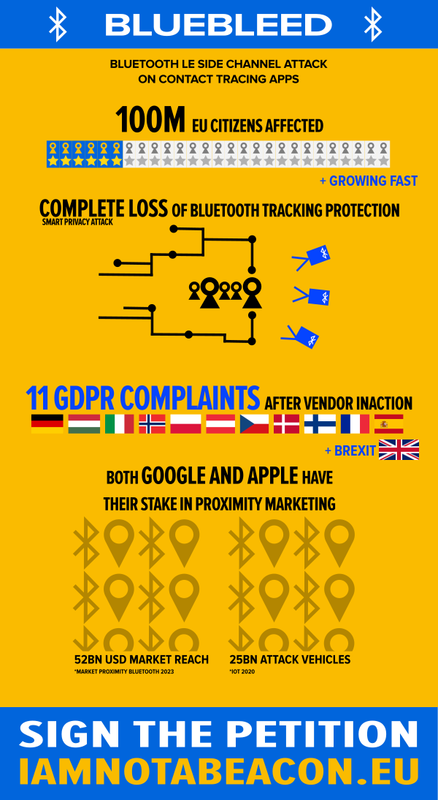

Dear privacy advocates and considerate digital citizens, My name is Peter Steiner and I have an important story to tell. On June 11 I disclosed a critical issue to the information security community. I chose to go public right away because the matter was urgent. I expected delays handling the situation with the two affected vendors: Google and Apple. Common tactics.
In my naivety I still initiated communications with their security departments to help them work on the issue. Google engineers reported lack of knowledge about the overall scope of tracking to the state of Arizona in recent investigations. This matches my impression back then. US corporations just do not "get" the European value system. Or even their own vast profiling machine. The concerns of my vulnerability report where even confirmed by the engineers in our chat. Still, the powers that be decided to ignore the issue.
This has forced me to issue a complaint to the data protection authorities of all affected EU countries and UK. I have not taken this step easily. My point of view in regards to this issue is fatal. The disclosure (CVE-2020-13702) stands at the highest possible vulnerability score of 10.0. Affected are potentially up to 100.000.000 EU/UK citizens right now.
While we are actively working towards a solution for the issue I restrain from final public GDPR disclosure. Our data authorities need time in such a sensitive matter. The technical complexity is intricate. I stand at a hardliner GDPR position and identify violation of 19 articles in total. Legal experts might disagree on some.
But fact is: we do have an issue with digital contact tracing. I am not the first to notice. We also do have an issue with data moving out of our domestic territories. The EU Court of Justice has ruled. And we definitely have an issue with the conception of "data protection by design". This is not exclusive for Californian tech giants.
Abuse of monopolistic leverage to exert market pressure is sprawling over the world from that very region though. Maybe there is a reason why California is literally on fire right now. I feel that we are currently seeing an impasse in our digital business. I encourage all global players to finally take a stand for the citizen rights. And to finally look for a common ground. Americans are also starting to feel the dangers of uncontrolled digital growth. Selling freedom for market cap is not a sustainable course.
I take extreme personal risk in pushing this agenda, but I am willing to face the consequences for the sake of our future democracy. Please show your support by signing the following petition. Forward to your alert friends. Educate your family about privacy and data protection. Digital singularity is happening. AI revolution is happening. World War 3.0 is taking place online behind the veil in this very moment. We need to spark change. Time is closing in on the point of no return.
Thank you for voting in the petition above.
If you are still willing to read on, then let me get on to the solution. We need to fix GDPR in Europe. But the Americas also have to change their digital rights system. We do not see any means of digital citizen rights protection in Africa. Other catastrophic issues roam there. Russia. India. The story is the same all over the world.
You might ask yourself now why I skipped the largest nation in the world in this list. China. The thing is, and this will be a surprise to most of you: they have managed to implement a proper data protection regime via their Cybersecurity Laws. In the last few years China has not only been a sparkling source of disruptive innovation. They also went in fast pace to harmonize their hyper growth economy with governmental policies.
We might disagree on some basic political beliefs. But it is not for us to judge the situation of 1.4 billion humans living their lives in their specific historical context. China has all but eliminated poverty. I'll take that as a parameter of a highly functioning society. While the current Republican US leadership failed fatally, while the UK administration took some very wrong turns, China has been able to manage their COVID-19 outbreak exceedingly well. Better than most of Europe.
I ask you to follow me through with an open mind. Let us find out why that might be. Pandemic management is an extremely challenging task. Traditional health care structures fail to provide for the highly adaptive and dynamic virus. Data is the one thing vital to fight this enemy. And data is what China has in abundance.
We dabble around with digital contact tracing technology that is broken by design. Bluetooth does not match with accuracy necessary to yield results. At the same time, we fail to acknowledge that the data needed to stop COVID-19 from a killing spree is actually vital public health data. We do not consider getting into an MRI too intrusive for our privacy if we fear some fatal disease. Why do we not take the COVID-19 situation as seriously?
Experts tell us that the tricky thing about a virus pandemic is that it appears to affect anyone else but us. Leaders that lack vision hold huge rallies with their unmasked followers. Concerned but troubled citizens attend huge protests and show provocative ignorance of the involved risks. And while we can continue to educate with patience, people still will be people. Our post-factual digital society will always be a mix of all kinds of radical points of view.
Getting back to China can teach us a lot about the means to still execute the capability of disease control. They provide accurate mobile location data to their healthcare system. We let Google collect our location information, even if we opt out we are still tracked in corporate big data. But we do not provide the data to those that might save lifes.
China enable their camera surveillance system to detect health issues. They install sensor gates at schools and public spaces. They deploy drones to augment the educative and sensoric effect. This country untapped the data necessary to fight for the basic right to live. As a data protection activist I understand why we did not choose to head in the same direction. Our value system does not allow for such deep surveillance technology to be deployed yet. Our constitutional rights are in deep conflict for this unseen scenario. But we can solve both problems. One at a time.
Russia has already succeeded in the kickoff of their vaccination program. Other countries will follow, likely at the end of the year. We do have a sun rising on the horizon. I propose that we bite the sour apple and temporarily unlock at least basic location data as already sourced at provider and mobile phone vendor level. A quick fix for the broken track and trace apps. We might need to apply some statistical methods to accomodate for the location variance, but that is what we would need for the existing Bluetooth based system anyways to show effect. Virus researchers do have experience with these methods. We can push the functionality to another level of efficiency in short timeframe.
I also propose that we also add a proactive alert system to initiate better disease prevention. European countries have already started to implement a traffic light system that indicates regional risk of infection. We can easily add push based alerts to mobile phones moving between cell towers to achieve this. Telecommunication equipment is prepared to handle it. We are all used to SMS notifications when passing country borders. Why not implement a geofencing solution accumulating infection data and hook it up to the same systems?
Do not mistake the immediate arrival of vaccines with a quick solution though. According to the silenced but strong voice of Dr. Fauci the chance to reach herd immunity with our first round of vaccines is slim to none. People will reject vaccination for various reasons. Effectiveness will not be 100%. Which is why I do not stop there.
We do need a secure data matrix spanning cross-border to untap the true potential of data. IBM has recently reached a break through in homomorphic encryption. A leap of technology largely gone by silent. With instant messaging we are already using secure distributed computing. On top of that, homomorphic encryption will allow us to reach zero-knowledge computation. At this point we can safely transfer health data from local secured silos to remote destinations.
This will facilitate regional data exchange vital for large scale pandemic projection. We need to know about wave events and superspreaders as soon as it happens. And viruses do not stop at borders. Regulating location data and other relevant meta information into medical legislation will enable us to safely retrieve and store it on a communal level. We already hold an abundance of personal data at health care organizations. We should leverage the existing protected data stores. Let us tap the data that is helping in the Chinese fight against the pandemic now. We can safely move it around very soon.
Sure, this change is not as easy as my original suggestions. But the vast benefits are worth the sweat and tears. And believe me or not, I do hold all the solutions to these problems in my drawer. Experts tell us that even after vaccine availability we will have at least another year or two of critical infection rate. Enough time to implement the suggested fundamental changes and still save many, many lives. And in consequence help less enabled regions to fight their other biological wars.
Please let me wrap up with a last fact: did you know that there is more viruses on earth than there is stars in the universe? We are but a mere billions. Humanity does not have a chance of winning this fight unless we stand together as one. My name is Peter Steiner and if it is permitted I am willing to help on all fronts to win this fight. And this is just a first step into a truly ethical digital future. Prepared for necessary climate tech, for the AI revolution. I already feel the poison hitting me. Use me or throw me away, the choice is yours.